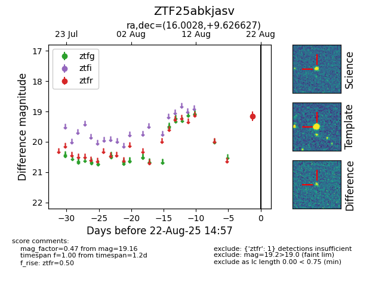

Target ZTF25abkjasv at 2025-08-22 15:41, see:
FINK: fink-portal.org/ZTF25abkjasv
Lasair: lasair-ztf.lsst.ac.uk/objects/ZTF25abkjasv
ALeRCE: alerce.online/object/ZTF25abkjasv
alt names
ZTF25abkjasv (ztf,alerce)
coordinates:
equatorial (ra, dec) = (16.0028,+9.62663)
galactic (l, b) = (128.1000,-53.11891)
photometry
last ztfr=19.16
1 ztfr detections
